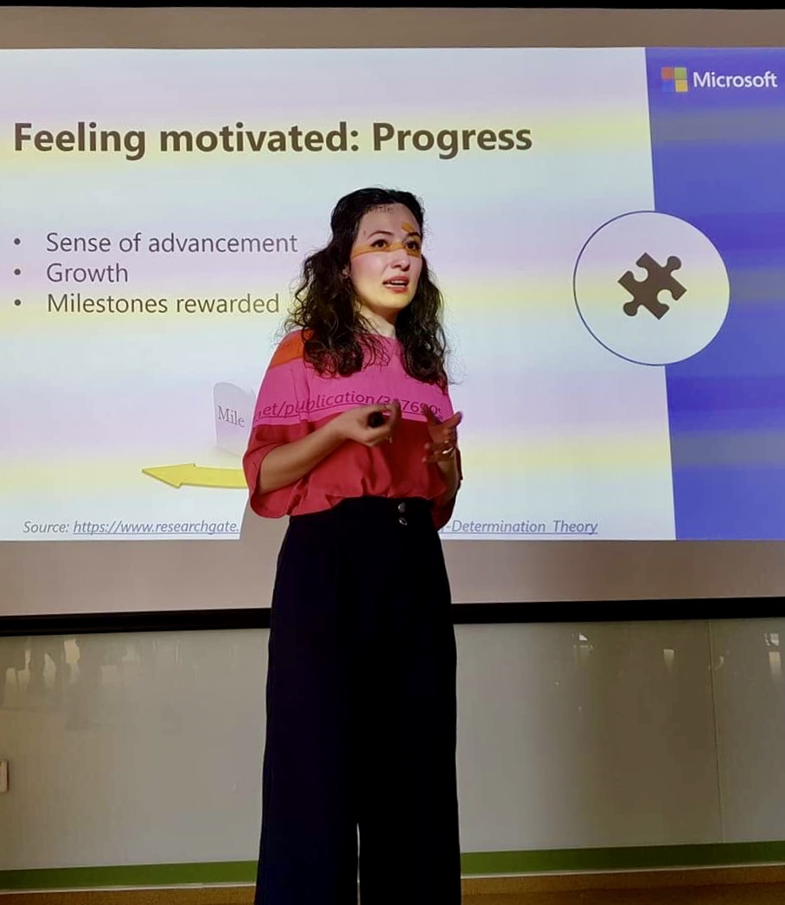

Intro
Hi! I'm Georgiana. I'm trained in Communication, Cognitive Psychology, and Programming. I've spent the past few years working in London, Amsterdam, and Bucharest. I'm passionate about technology and how it shapes the world. You can check out some of my work.
I'm proactive, adaptable, and results-oriented. I combine a growth mindset with a successful blend of enthusiasm, self-discipline, and intrinsic motivation to achieve results. I love continuous learning and personal development, therefore I take every opportunity to do so. So far, I studied, worked, and lived in Romania, France, UK, and The Netherlands. In 2016, I took a sabbatical year and explored over 20 countries, on 3 continents, cultivating an outstanding cultural awareness.
Work

I have experience in training & communication, including expertise with adoption & change management of technical services. My background is in learning program management, with experience in learning account management within technical and shared-services companies.
I worked with companies ranging from digital innovation startups to large tech enterprises, managing or contributing to onboarding programs, technical learning paths, mentoring schemes, and certification programs. I'm passionate about behaviour change, mental models, and decision-making. You can read more about my work on LinkedIn.
Cloud certifications
I'm certified in Azure:
- Azure Fundamentals
- Azure Data Fundamentals
- Azure AI Fundamentals
- Azure Data Scientist Associate
- Azure AI Engineer Associate
About
This website is put together by me, using a template built by aj@lkn.io, and hosted on GitHub Pages - this is my attempt to tinker with code.
Lately, I've been learning Python, AI and Machine Learning concepts. I've recently taken some cloud computing courses, and I had the chance to teach ML fundamentals to young students over the 2021 summer.